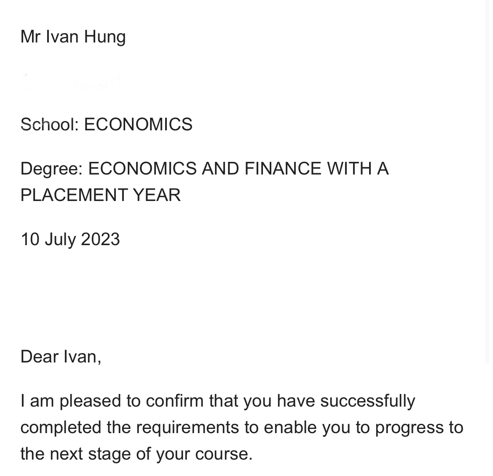
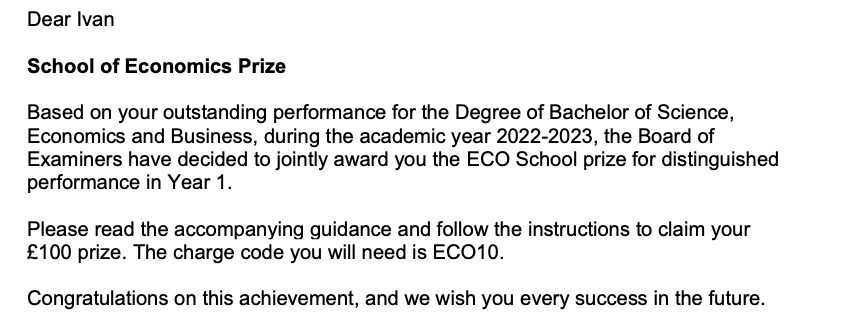

First in-person interview! (03.04.24):
After some rigorous rounds of the application process, I had the opportunity to have an in-person with this company (which I will not disclose)
where I created a presentation prior about a personal experience on development and had a behavioural interview afterwards. It was a thoroughly
enjoyable experience and I cannot thank the company enough for allowing to have the chance to visit them.
All went well, however, their vacancies were full and so at this time I wasn't offered a position as a summer analyst, however,
I was shortlisted! Despite not getting a spot, I have decided to journal this experience as it was the first time that I ever did an
interview for an internship in-person.
Check out the presentation I made by clicking below!
Click here to view the presentation!
NM Finance - Property Developer Series (08.02.24):
Today I attended a property developer event hosted by NM finance! 🌆
Some of the key topics I picked up from today's property developer series on land was land acquisition, development, types of land
applications, sorts of things to look out for when acquiring land and the nightmares of Nutrient Neutrality (NN)!
(For those who are unsure what NN is, it essentially ensures that development plans don't further worsen levels of nutrients within a catchment)
It was interesting and insightful to hear professionals in the field talking about different land purchases and helping developers
upstart or improve their portfolios and giving top tips on minimising costs along the way.
Alongside this event, I met some amazing and enthusiastic people and overall was a lovely evening!
LSEG Masterclass Programme w/SEO London (31.10.23 - Halloween):
Today, I had the opportunity to visit the LSEG for the evening to meet like-minded peers and it was lovely to connect with so
many people and get an insight into what graduates do in their day to day lives! 📈
We discovered about the different divisions and services they provide and this bought a new perspective into where I want to go with my
career in the near future! It was great to have a further insight into the diverse divisions that we were available in both their internships
and graduate roles!
A big thanks to SEO London for giving me this opportunity and hope I can attend for all the ones to come!
Lloyds Banking Group - Technology and Data Insight Day One (14.08.23):
On the same day I received my position as a Goodnotes ambassador, I attended a virtual insight day where
I discovered the ins and outs of being a Data scientist, analyst & business analyst and even had a go with
dealing issues that they work on everyday when on the job! Overall, it has been a fun experience and a nice
refresher to the topics I learn from my first year statistics module in preparation for my econometrics module
next year! Download the presentation we came up with on consumer behaviour with the button below!
Click here to view the content from Day One! →
Lloyds Banking Group - Technology and Data Insight Day Two (15.08.23):
After another early start to the insight, we started exploring more technical roles which LBG offer in the world of
banking and we were also tasked several projects which involved presenting, planning and innovative thinking. In the
first presentation we pitched, I was 'thrown under the bus' as I was made to present our entire framework to a board of
people, however, I didn't mind this experience and was ready for the challenge! The second time, our pitch fostered a 5-year
plan of incorporating a new system which a bank could use to improve customer service and sustainability of our environment
(I did slides 2,3,4 & 5).
I used my ESG and economic skills to help me create a plan which involved integrating blockchain
transactions into the world of banking, where I created the roadmap and reasons for how it would improve overall ESG performance
within the organisation. The presentation (in my opinion) was very professional, considering we completed it in about 45 minutes -
have a look at the presentation created through the download button below (I did slides 3,6,7 & 9)! Overall, it was a fun experience
which allowed me to enhance my presentation, communication/teamwork and leadership skills whilst networking with some lovely people
who were at different levels of University!
Click here to view the content from Day Two! →
Brand Ambassador Opportunity (14.08.23):
I am proud to announce that I will be on an 8-month contract with Goodnotes to promote their application and my passion for
digital notetaking! I hope we build a strong relationship together and that you find my social media platforms fun and creative!
First ESG Report Breakdown (11.08.23):
I can finally say that I have completed an ESG Report which took me about 7-8 hours, to be fully honest,
I didn't look at the clock a single time and I can't really tell if that should be considered a good thing
or a bad thing 😅😂
The following link goes to the ESG Report itself, hope you enjoy the read!
Click here to view the report!
First Year Results (11.07.23):
I am proud to say that I completed first year with a 78% (First Class) weighted average with a first class in every module I took:
- Microeconomics I (70.04%)
- Macroeconomics I (71%)
- Maths for Economists I (90%)
- Statistics for Economists (80%)
- Intro to Behavioural Economics (81%)
- Eco of Society (79%)
I also achieved an award for Distinguished Performance in my first year [Achieving the best grade in my cohort].
1 / 2

Evidence of Completion

Distinguished Performance Award (Worth £100)
New Role at the Oakwood Fund (16.05.23):
I am happy to release the news that I will be leading Oakwood Fund's new ESG Team (as the ESG Director) and will be overseeing
the reports that we will produced over the next academic year (2023-2024), if any of my team reach my page, we're going to lay
out a new path for the future generation!
AmplifyME Experience (15.05.23):
Just completed my second experience as being an IB/AM and today, a rollercoaster of events happened! I ended up doing
amazingly well as an IB (coming 2nd place out of 56 people) and having a 100% PnL rating! However, when it came to asset
management, well, I have seen better performance by myself and got off to an unfortunate start. Overall, a great experience
and will definitely attempt the higher levels in the future!
2-Day Python Experience (21.03-22.03.23):
In this 2 day crash course on using Anaconda Python, I learnt how to use numerical operations and revised through loops and
if/else statements through statistical context and learnt how to derive different mathematical proofs such as: the Fibonacci
Sequence and law of large numbers.
Very tedious 2 sessions, especially the second 3 hour session, but overall a very enjoyable and educated session!
Maths Summative (02.02.23):
I recieved my maths exam grade on this day and was happy to say that I smashed a first honours grade with 93% and again
got second best in my class - I was 1.3 marks away from the top grade! However, overall very happy with how the module
turned out and in fact got the highest module grade of 90% when combining the exam and Maths-Micro Synoptic project a did
a while back. Can't wait to start my level 5 maths module in Year 2!
Rethinking Economics (Post-thoughts - 31.01.23):
Rethinking Economics (Pre-thoughts - 30.01.23):
I signed up for a social experiment which (from the extent of my knowledge) is to test the nature of a group of people, which was incentivised through being paid £20.
It has been kept quite ambiguous, however, I am excited to see what will happen.
The session was very fun and interesting - I was placed in a group call with 7 other people and we were asked several questions on some
economic statements and were asked to provide our opinions on different messages (economic pluralism and how to change the style of teaching
from a students' opinion). The experience was engaging and very different to anything I have done in the past; would totally recommend
anyone who is unsure if they will enjoy something they haven't done before to go and try it out!
Alumni University Fair (04.01.23):
Today I went back to my Sixth Form to do a talk for the current Year 12 and 13's and provided them with an insight into University.
Of course, Economics had a large queue as many people were curious to see the difference in content between A-Level and Uni. Despite
my lack of module knowledge (as I have only currently done 4), I gave my best explaination to give them a better insight to the freedom
of module selection that they would have at University of East Anglia; since from the extent of my knowledge, the module selection system
varies between Universities. Overall, it was very fun going back and seeing some of my old teachers!
Internship - Spring Insight Application (24.12.22):
Surprisingly on all the days to recieve a response, I was happy to hear that UBS had seen my application and wanted me to do some tests;
more specifically numerical and inductive reasoning and this was quite exciting as it was my first time doing these types of tests. They were
very interesting and were different to what I was expecting as I thought it would be more open-ended, however, they were all multiple choice or
true/false responses. Despite not needing to write, some of the questions were fairly challenging as it required me to analyse data and some charts
looked intimidating at first, but after a while I adapted and they weren't too bad in the end.
Note to self - don't send off applications too late and always be on the ball with updating CV
UEAFIS Christmas Meet (12.12.22):
My university's Investment Society had a social gathering on this day - it was an informal event where all years
could socialise over a few drinks and a meal. This was my second time officially networking without knowing anyone
attending prior to the meet. The experience was really fun and I networked with people from many academic backgrounds,
such as: engineering and maths, but enjoyed investment and finance in general. I also had a great discussion with the board
directors and senior analysts of uni's 'investment firm' (the Oakwood Fund) and got some insights into their experiences with
second and third year modules which really helped to see what modules I might want to do in the near future!
First Solver Video on YouTube (20.11.22):
I made a YouTube video for people that kept asking me on how to use Solver on Microsoft Excel and I
enjoyed making the video a lot (since I used to vlog and make videos on YouTube) and this further inspired
me to start tutoring GCSE Maths and A-Level Statistics on Tutorful as I believe that I will be able to teach
students at the level effectively.
AmplifyMe Experience (15.11/22):
In this two hour session, everyone played two roles: AM (asset manager) and IB (investment banker).
We were provided with brief overviews on what we would be doing on our jobs and were given a tour around
the UI. I started off as an AM and I must say, they threw us in the deep end as it was very intense, but
exciting at the same time. At the end of the first session, I had a positive portfolio and had staked some
profits from the 'market'! Then I moved onto becoming an IB, this didn't go so well for me, but noneoftheless
I still made a positive profit! The overall session was enjoyable and intense at the same time and I didn't end up
getting the most amazing scores, however, I came out 15th out of 56 overall which I am very happy about (since I was
going against people with a much better financial knowledge than me).